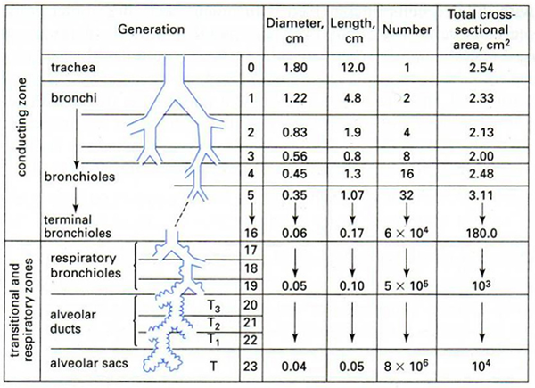
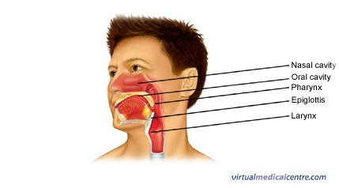

- Airway passages
- Conducting zone and respiratory zone
- Conducting zone
- Outside the lungs – nasal passages pharynx epiglottis larynx (glottis)
- Inside the lungs – trachea (1) bronchus (2 branches) bronchiole … terminal bronchiole
- Respiratory zone
- Respiratory bronchiole … alveolar sacs
- What happens to individual airway diameter and length as go deeper into the lungs?
- Collective x-sectional area?
